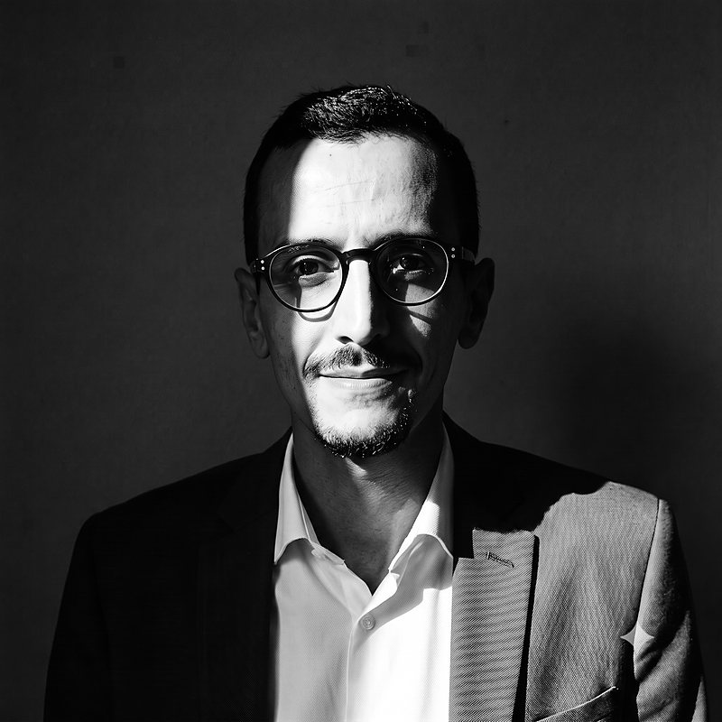
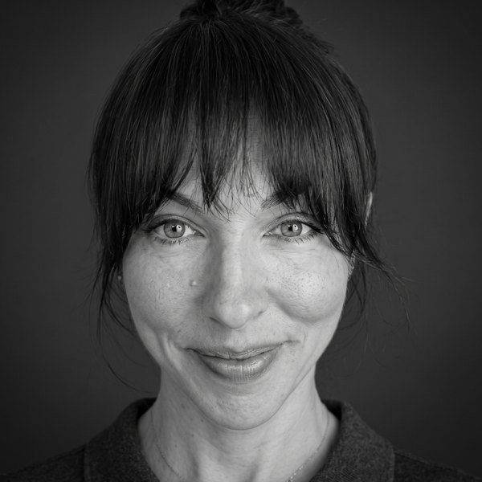

Geozey est un réseau sélectif. À chaque mission, un seul expert est proposé : le bon. Ou pas de réponse.

Treize ans sur le terrain, sur les chantiers où l'écart se paie en mois et en millions. Fusion. Souveraineté énergétique. Transition. Réindustrialisation. Service public. Contrôler, maîtriser, délivrer : zéro delta sur le coût, la qualité, les délais. La maîtrise se prouve : forme ceux qui planifient. Reprend les plannings qui cassent.

Plus de 10 ans à voir le projet industriel critique sous toutes ses coutures. Quality manager sur Barracuda. Lead Planning sur Tokamak Complex (ITER). Doc control + qualité sur EACOP. Ex-business manager d'un cabinet de consulting.
Onze ans de génie civil dur, dont sept chez Eiffage. Apprenti à Flamanville 3, méthodes sur EPR2, conducteur de travaux sur 62 chantiers ferroviaires GSM-R, OPC sur la Gigafactory ACC & Verkor.
Neuf ans à tenir un planning EPC de l'étude à la mise en service. Incinérateurs CNIM (Chester 2,5 ans). Chaîne de drones ECA Robotics. Aujourd'hui sur l'extension de la base navale de Toulon, programme Barracuda.
La structure est sélective. L'exigence est élevée. Le reste, on s'en occupe. CDI de chantier, portage, freelance accompagné : selon ce qui vous correspond.